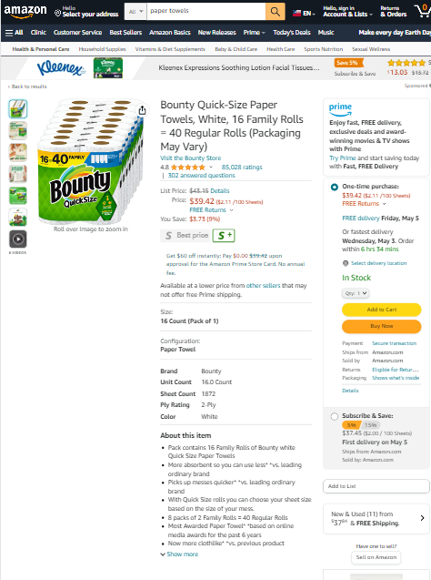
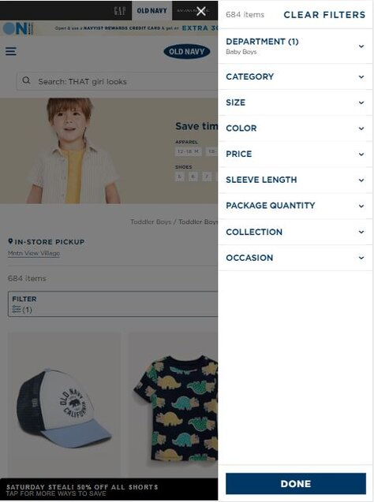
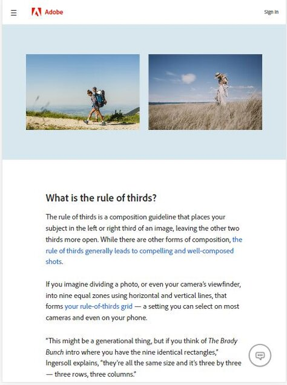

Visual Hierarchy
Amazon
amazon.com Visual Hierarchy is the order of elements in which the human eye perceives what it sees. In this case, the color of the "discount price" is red, which should draw better attention to customers. While the color of the "List Price" is grey with a cross line. Similarly, the button "Add to cart” is yellow while the button "Buy now" is orange which is more prominent to call for an act.
Hicks Law
Old Navy
oldnavy.gap.com Hicks Law focuses on eliminating distracting options to easier make better choices. Filters are particularly good implementation of Hicks Law in web design.
Rule of Thirds
Adobe
adobe.com An image should be divided into nine equal parts by two equally spaced horizontal lines and two equally spaced vertical lines. Additionally, important compositional elements should be placed along these lines or at their intersections